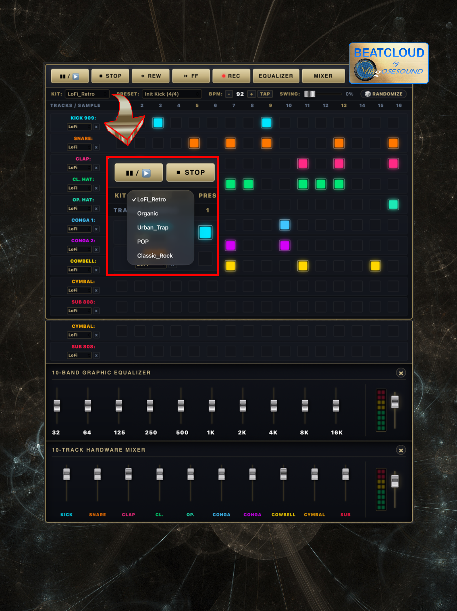
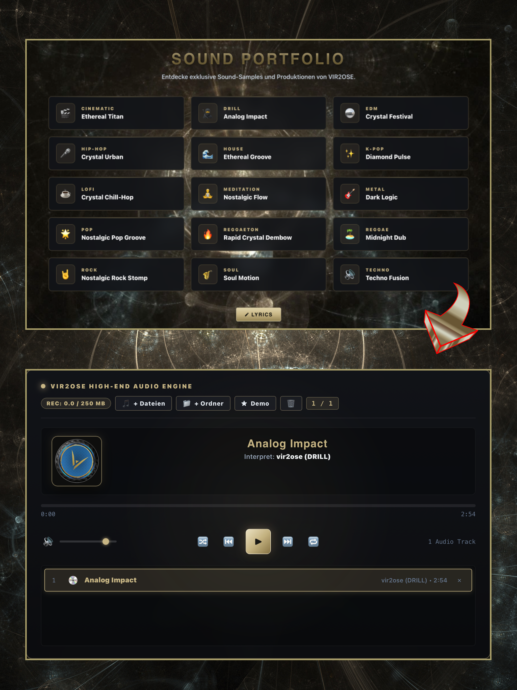
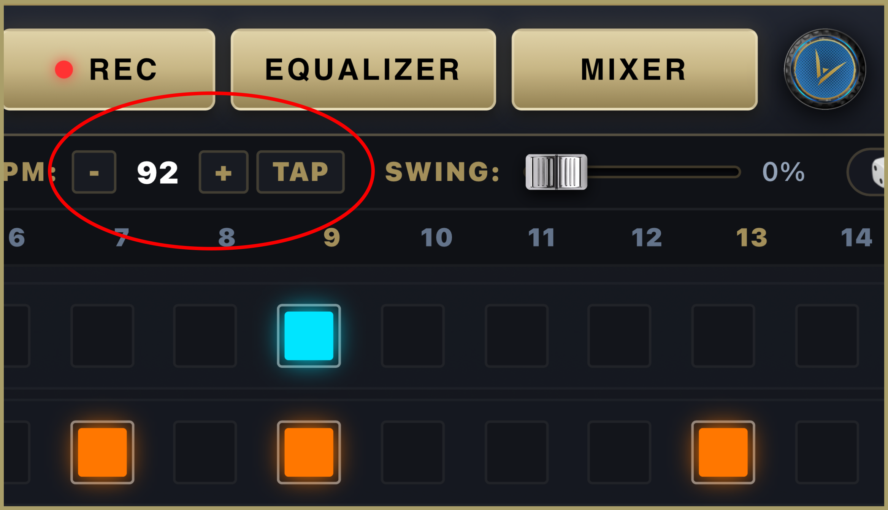
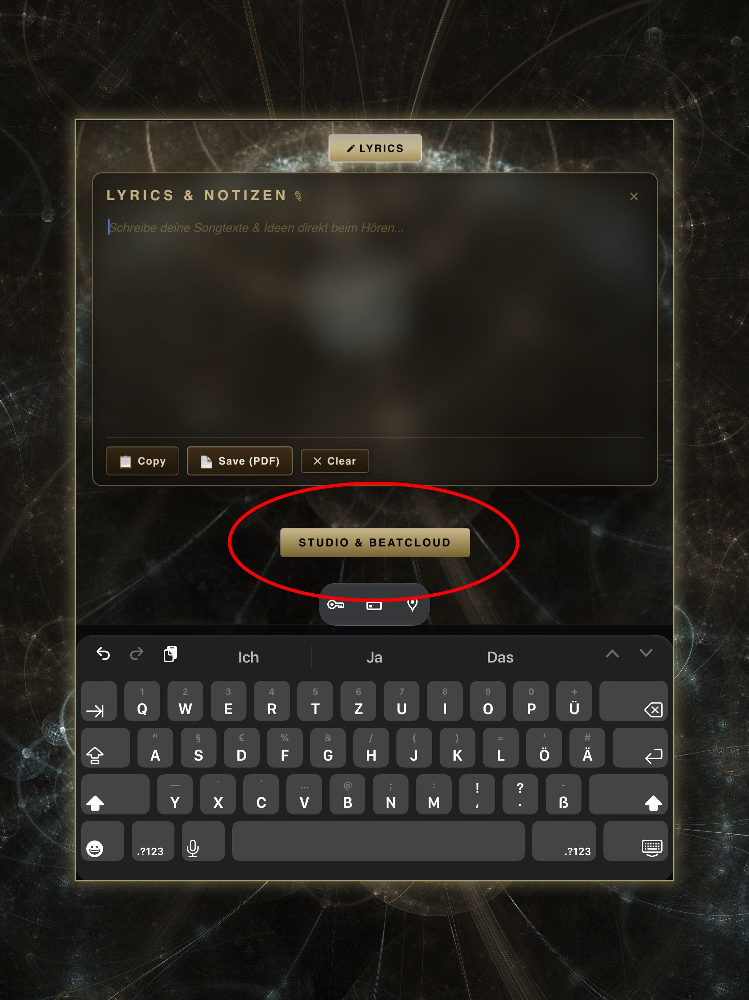
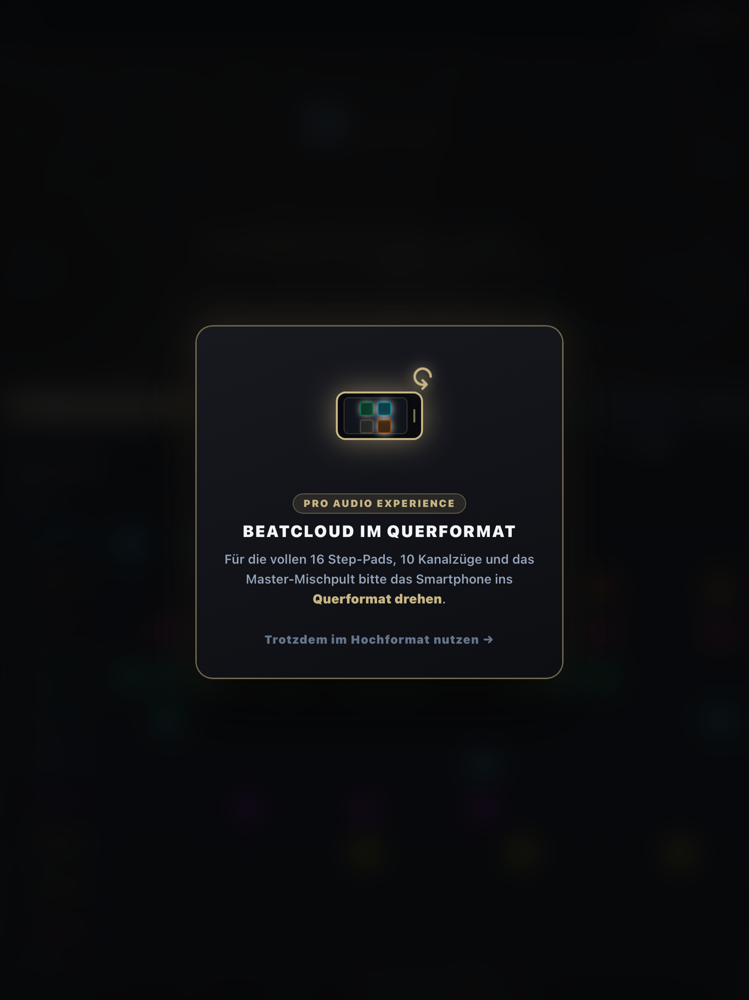

HIGH-END AUDIO POWERHOUSE IM HOSENTASCHENFORMAT
Entwickelt aus 26 Jahren Studio-Expertise. 100% autark, latenzfrei und für präzise Touch-Bedienung auf Smartphones & Tablets optimiert.

16-STEP BEATCLOUD, 10-BAND EQ & HARDWARE-MIXER
Die vollständige mobile Beat-Workstation: 16 rhythmische Step-Pads, 10 simultane Spuren und analog modellierte Mischpult-Tools vereint auf einer übersichtlichen Touch-Oberfläche.
- 16-Step Pattern Grid: 10 parallele Spuren für Kick, Snare, Claps, HiHats, Congas, Cowbell, Cymbal und druckvollen Sub 808 Bass.
- 5 Factory SoundSets: Direkt umschaltbare Signature-Kits (LoFi Retro, Organic, Urban Trap, POP & Classic Rock) von Waldemar Krucinski produziert.
- 10-Band Graphic Equalizer: Chirurgische Klangregelung von 32 Hz bis 16 kHz mit reaktionsschneller Stereo-Master-Pegelanzeige.
- 10-Kanal Hardware-Mixer: Präzise Einzelkanal-Fader mit Peak-LEDs für perfekte Pegelbalance und Transparenz im Gesamtmix.

SOUND PORTFOLIO & VIR2OSE HIGH-END AUDIO ENGINE
Erstklassige Musikproduktionen und vielseitige Genre-Libraries treffen auf eine kompromisslose 16-Bit / 44.1 kHz Web Audio Engine.
- 12 Exklusive Genre-Libraries: Handverlesene Produktionen von Cinematic, Drill, EDM, Hip-Hop, House, LoFi bis Techno, Soul und Rock.
- High-End Audio Player: Native Audio DSP mit Live-Wellenform, Playlisten-Management und kristallklarer Stereo-Wiedergabe.
- Drag & Drop Import: Lade eigene Audiodateien und Ordner direkt in den Player – vollständig offline im Browser gespeichert.
- 250 MB Offline Audio Buffer: Maximale Performance ohne Nachladeverzögerungen für nahtlose Performance-Sessions.

REC-MASTERING, TAP-TEMPO & GROOVE SWING
Von der Skizze zum fertigen Master: Präzises Timing und intuitive Master-Kontrolle für deinen Beat-Workflow.
- 1-Klick Studio Master REC: Echtzeit-Aufnahme deiner Sequenzen direkt in unkomprimierte Studio-Master WAV- & MP3-Dateien.
- Dynamisches TAP Tempo & BPM: Ergonomische Tempo-Einstellung oder intuitives Einzählen des Tempos per rhythmischem TAP-Button.
- Stufenloser Analog Swing: Regelbarer Swing-Fader (0% bis 100%) für organischen Shuffle und lebendiges Micro-Timing.
- Optischer Step-Ruler: Reaktionsschnelle optische LED-Positionsanzeige für perfekte visuelle Orientierung im Takt.

LYRICS & NOTIZEN MIT PDF-EXPORT
Vom ersten Beat bis zur fertigen Songzeile: Halte Texte, Reime und Produktionsnotizen direkt beim Jammen fest – ohne den Beat zu stoppen.
- Immer im Flow: Schreibe deine Songtexte direkt beim Hören deiner Beats – ohne App-Wechsel oder Ablenkung.
- 1-Klick PDF & TXT Export: Speichere deine Texte formatiert als sauberes, druckfertiges PDF oder Textdokument für Studio-Sessions.
- Nahtlose Studio-Rückkehr: Der zentrale „Studio & Beatcloud“-Button bringt dich sofort wieder zurück in den Sequencer.
- Automatische Speicherung: Deine Lyrics bleiben lokal sicher im Browser gesichert und gehen beim Schließen nicht verloren.

VOLLE KONTROLLE IM BREITBILD-QUERFORMAT
Entwickelt für maximale Übersicht und taktile Kontrolle: Dein vollwertiges Studio für die Hosentasche auf iOS, iPadOS und Android.
- Optimierte Breitbild-Ergonomie: Alle 16 Steps, 10 Fader und Master-Bedienelemente ohne horizontales Scrollen im direkten Zugriff.
- Taktile Touch-Architektur: Großzügig dimensionierte Pad-Zonen für fingerfreundliches, reaktionsschnelles Beat-Jamming.
- 100% Offline PWA Technologie: Installierbar als native Web-App auf dem Homescreen – arbeitet vollständig ohne Internetverbindung.
- Zero-Latency DSP: Direkte Hardware-Verarbeitung über die native HTML5 Web Audio API ohne spürbare Latenz.
EINMAL KAUFEN. FÜR IMMER BESITZEN.
Auf iPad, iPhone und Android-Smartphones. Keine monatlichen Abonnements, keine versteckten Kosten. Volle kreative Freiheit für deine Musikproduktion.